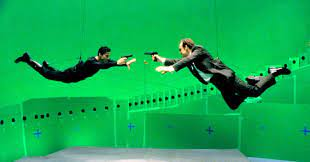
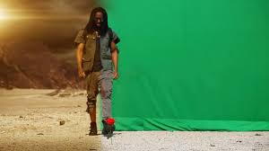

OpenCV es una biblioteca libre de visión artificial originalmente desarrollada por Intel. OpenCV significa Open Computer Vision (Visión Artificial Abierta). Desde que apareció su primera versión alfa en el mes de enero de 1999, se ha utilizado en una gran cantidad de aplicaciones, y hasta 2020 se la sigue mencionando como la biblioteca más popular de visión artificial.
Visión por Computador. La visión por computador es una disciplina de la informática que trata de extraer y analizar la información de interés contenida en una imagen o secuencia de imágenes. Los campos de aplicación crecen cada día y van desde el reconocimiento de caras al diagnóstico precoz de enfermedades, pasando por la detección y localización ...

Al ser un filtro de paso bajo, el desenfoque gaussiano suaviza los valores de pixeles desiguales de una imagen recortando los valores atípicos extremos. Cuándo usar el desenfoque gaussiano. Los fotógrafos y los diseñadores eligen las funciones gaussianas para distintos fines.